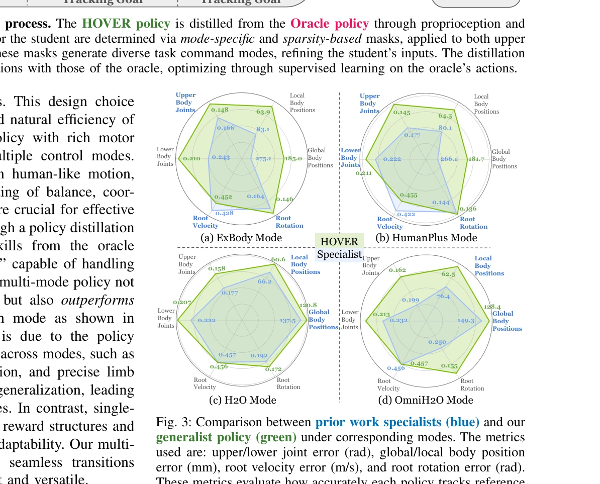
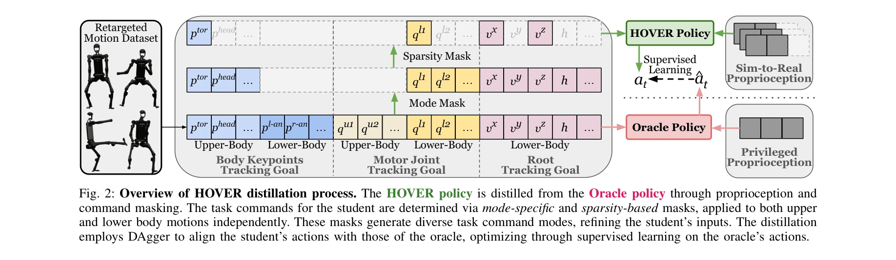

Essence

Fig. 1: HOVER enables versatile humanoid control with a unified
HOVER는 키네매틱 위치 추적, 조인트 각도 추적, 루트 추적을 포함한 15개 이상의 제어 모드를 지원하는 통합 신경망 제어기로, 정책 증류를 통해 다양한 제어 모드를 단일 정책으로 통합하여 휴머노이드 로봇의 다목적 전신 제어를 실현한다.
저자: Tairan He, Wenli Xiao, Toru Lin, Zhengyi Luo, Zhenjia Xu, Zhenyu Jiang, Jan Kautz, Changliu Liu, Guanya Shi, Xiaolong Wang, Linxi Fan, Yuke Zhu | 날짜: 2024-10-28 | URL: https://arxiv.org/abs/2410.21229
Fig. 1: HOVER enables versatile humanoid control with a unified
HOVER는 키네매틱 위치 추적, 조인트 각도 추적, 루트 추적을 포함한 15개 이상의 제어 모드를 지원하는 통합 신경망 제어기로, 정책 증류를 통해 다양한 제어 모드를 단일 정책으로 통합하여 휴머노이드 로봇의 다목적 전신 제어를 실현한다.

Fig. 3: Comparison between prior work specialists (blue) and our

Fig. 2: Overview of HOVER distillation process. The HOVER policy is distilled from the Oracle policy through propriocept
총평: HOVER는 휴머노이드 전신 제어의 다중 모드 통합이라는 실질적이고 중요한 문제를 정책 증류 기반의 우아한 해결책으로 제시하며, 시뮬레이션과 실제 로봇에서 모두 검증된 견고한 성과를 보여준다. 다만 실제 환경의 복잡한 작업에 대한 적응성과 계산 효율성에 대한 심화 분석이 더해지면 완성도가 높아질 수 있다.